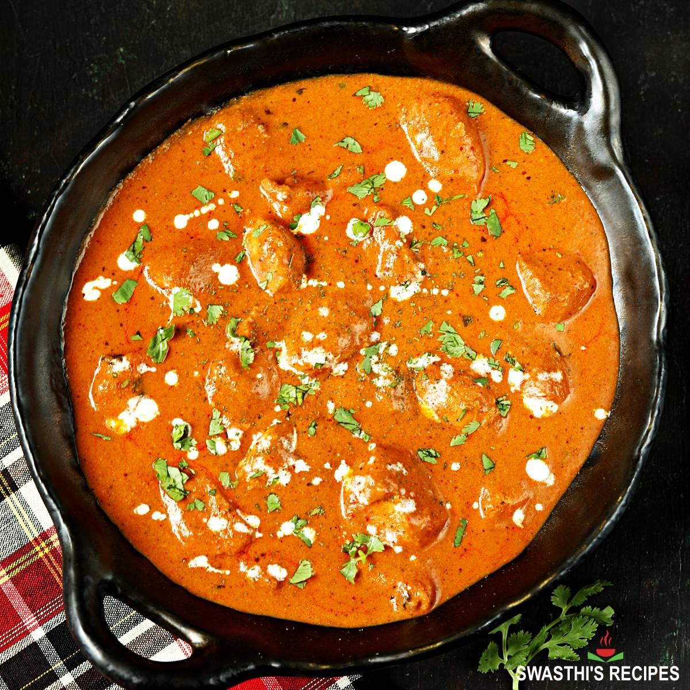

Butter Chicken!

Description:
Delicious restaurant-style butter chicken made right at home with simple ingredients. This
recipe is exactly how they make butter chicken in restaurants - and I've had people tell me
it's actually better! Trust me when I say it's finger-lickin' good!
Ingredients:
-
Chicken
-
Seasonings
-
Fenugreek Leaves
-
Fresh Ginger and Garlic
-
Oil
-
Yogurt
-
Ghee
-
Crushed Tomatoes
-
Onions
-
Heavy Cream
-
Prepared Rice or Naan Bread
Steps:
-
Start by making a homemade meat sauce. This is done by sautéing an onion
in olive oil until it begins to soften. This brings out the sweet flavor of the onion.
Then it is time to brown the ground beef until it is browned and the onion is softened.
Stir in the marinara sauce and let it simmer on low. If you want your lasagna to be extra
saucy, I suggest adding 1/2 jar more marinara sauce.
-
Make a parmesan ricotta cheese mixture. This is what gives the lasagna the
creamy filling. I love to flavor the ricotta cheese with a good amount of parmesan cheese,
spices, and egg to bind it together.
-
Use your favorite lasagna noodles. There are two choices for lasagna
noodles — oven-ready pre-cooked noodles or lasagna noodles that need to be cooked before
hitting the oven. I have tried both ways and can attest that they both work!
-
Bring on the cheese! The best lasagna is full of cheese so be generous with
the layers of mozzarella cheese.
-
Bake covered for 15 minutes. and then remove the foil and continue to
cook until the cheese is bubbly. Let it set up for 10 minutes before serving.